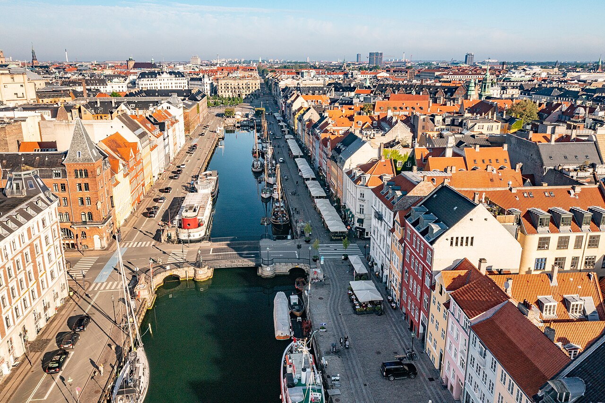

Every stop is inside Schengen. Ninety cells is the whole allowance — one per day, no refills. Eighty-three are spent below; the last seven are the buffer that makes every other number in this document movable.
83 nights allocated · Aug 24 → Nov 15
7 days of buffer · to Schengen day 90, Nov 21
Hover a cell to read the day.
Route in one line (order fixed; lengths flexible)
Copenhagen → Gothenburg → Oslo →Stavanger/Preikestolen→ Bergen/fjords →
Stockholm (+Gotland optional) → Helsinki →⛴ Tallinn →Riga (base)→ Vilnius →✈ Ljubljana → Croatia →Italy (Venice → Naples/Amalfi)→✈ home from Naples/Rome (~mid-Nov).
Status
Fall leg (Aug → ~mid-Nov) planned & costed. Fits the 90-day Schengen window at ~83 nights baseline (~6–7-day buffer — Italy trimmed for slack; see §2). Nights are flexible ranges — move days as energy/weather dictate; keep total ≤90. Lodging picks are neighborhood-vetted (§7) but re-bookable as lengths shift. Winter = fly home; Balkans deferred. Spring = provisional (§5).
Parallel goal: identify a ~1-year base near/in Europe — fall stops are lifestyle scouts. Year-1 may be unpaid sabbatical (no employer → most DNVs out). See memory/europe-year-base-nomad.md.
1
Fall itinerary at a glance
Land CPH Aug 24 (ticketed) · end ~Nov 15 · baseline ~83n · Schengen day 90 = Nov 21 · dates slide when you move nights
Each stop has default / range. Steal from the swing pool first.
Swing pool
~6–8n to reassign: Gotland 0–3, Riga 7–12, Bergen/fjords 4–7, CPH 3–5, crumbs from GOT/HEL if skipping.
Booking
Prefer free-cancellation Nordic beds; lock sell-out transport with movable dates when you can.
On the ground
+1n if you love it or weather blocks a hike; −1n if done. Re-sum Schengen weekly.
Baseline table (defaults — not vows)
Dates are derived from the ticketed Aug 24 landing running through the defaults — they slide the moment you move a night.
Phase (≈)
Stop
Default
Flex range
Dates derived
Core idea / if you stretch
Default sum ~83n. Trading inside ranges → roughly 80–88n, still under 90.
Example trades (pick any): CPH 4 + GOT 0 = same week shape · GOT 3 (Vrångö) from Gotland · Gotland 0 → Riga 12 or Bergen 7 · Bergen 5 city+fjord tight if rushing south.
Why this shape: CPH landing (≈ Oslo fare) + overland CPH→GOT→OSL; Norway south→north; four Nordic capitals into Baltics; then SLO→HR→IT. Lengths float; route logic doesn't.
2
The Schengen constraint ⚠️
now the binding limit
Schengen = 90 days in any rolling 180-day period.Every stop above is Schengen (Denmark, Sweden, Norway, Finland, Baltics, Slovenia, Croatia, Italy). Baseline ~83n leaves ~6–7 days under the cap — that buffer is also your flexibility fuel. Moving nights between stops is fine; crossing 90 is not. Re-total whenever you +1/−1.
Balkans = the relief valve, deferred: the western Balkans (Bosnia, Montenegro, Albania, N. Macedonia, Kosovo) are non-Schengen — they don't burn your 90 days. Saving them for a future trip keeps this fall clean; they could also be spliced in another time to pause the clock.
No mid-trip reset within this trip: the whole thing spans <180 days, so a short non-Schengen break wouldn't add Schengen days here — the 90 cap is absolute for this window.
The play: ≤90 days Aug 24 → ~Nov 15, fly home from Italy; entry is ticketed, so day 1 = Aug 24 and day 90 = Nov 21 — that's the hard exit. A spring return needs a ~mid-May date for a full fresh 90 (Feb/Mar ≈ 0–25 days) — see §8.
Non-Schengen belt (for reference): W. Balkans, Turkey/Georgia, UK/Ireland, Morocco.
3
Already visited — route around these
2023 sabbatical (blog.buyuchen.org): Poland (Kraków, Warsaw), Czechia (Prague), Slovakia (Bratislava), Hungary (Budapest), Austria, Serbia (Belgrade), Bulgaria (Sofia, Plovdiv), Greece (Athens), Turkey; brief France (Christmas 2023). Route around it; the western Balkans/Croatia + Italy are fresh.
4
Fall hubs — what to do & why each length

Copenhagen entry
Aug 24 – 27
✅Ticketed: SAS SK938 departs SEA Sun Aug 23 3:55pm → CPH Mon Aug 24 10:10am (direct, 9h15). Train south when ready → Gothenburg or straight Oslo if skipping GOT.
Default do: Tivoli recovery night · green-ring parks · Amager/harbour bath · smørrebrød & stegt flæsk.
If 4–5n: add Louisiana and/or Malmö/Lund and/or Dyrehaven — unlocked only with the extra night(s).
Beds:Urban Camper ⭐ 4-bed mixed tent ~$41 direct flex (VAT + linen/towel + drink) · Next House central premium ~$60. No current private meets the ≤$110 value cap.
Preferred shape:2–3n Bergen + 2–3n Aurland/Flåm/Undredal (not six city nights). Quieter: Undredal, Gudvangen/Rimstigen, Sandviken. Fog day: KODE + Ægir, not a blind cruise.
Hard-hike choice:Aurlandsdalen Østerbø→Vassbygdi if the seasonal bus/trail align, or Rimstigen if dry — not both.
HEL ferry in (~2h). Old Town walls (don't dine Raekoja plats) · Telliskivi/Kalamaja food · Kadriorg · Viru bog/Lahemaa on the nature day. Exit Lux Express → Riga.
Nights: 3 = sweet spot (city + one bog day); 2 = drop Lahemaa; 4 only if stealing carefully from Gotland/Riga. Beds:Fat Margaret's ⭐ private first · Viru ⭐ dorm fallback · not Imaginary.
Lux bus from TLL. Central Market (not OT squares) · Art Nouveau Quiet Centre · Sigulda/Gauja · Ķemeri bog · Jūrmala or Rundāle · kitchen nights at Amella. Park leftover Scandi days here or trim if Italy needs buffer.
Through-walk option: use two sponge nights for a contiguous Forest Trail / E11 stage pair around Sigulda–Līgatne–Cēsis; confirm official GPX, beds and return transit first.
Year-base scout: 3+ workdays + cowork day pass + nature habit + "lease?" notes — lifestyle only (not a free year visa).
Bus from Riga. Baroque Old Town, Užupis, viewpoints; Trakai lakes day; optional Pavilniai if 4n. Then ✈ Ljubljana (connecting). Beds:Domus Maria / Mikalo private first · Downtown Forest dorm fallback.
Split: ~3n Ljubljana + ~4n Bled or Bohinj (not seven city nights). Vintgar · Bohinj/Vogel · Mostnica; caves from LJU; Piran only if 8n+. Soča ≠ casual LJU day trip. Beds:OH Apartments private (LJU) · private ≤$100 in the Alps · Celica/Bled/Pod Voglom dorm fallback.
Through-walk option: a 2-day Juliana Trail Bled→Pokljuka/Goreljek→Bohinj replaces the Vintgar/Vogel sampler; early-October snow or a closed intermediate bed cancels it. No Triglav summit on this pass.
Florence + Tuscany (3–4): Uffizi, Duomo, David; Siena day.
Mini-cammino (open): replace the Siena day trip with Via Francigena Monteriggioni→Siena (~20.6 km) by moving a Tuscany bed — no total-night increase. The 2-day San Gimignano→Monteriggioni→Siena version needs an explicit Florence/swing-night trade.
Naples + Amalfi/Pompeii (~5): Naples, Pompeii/Herculaneum, Vesuvius, Amalfi Coast (Positano, Path of the Gods), Capri.
✈ home from Naples (NAP) or Rome (FCO).Trimmed to ~20n to hold the Schengen buffer — snappier, but still Venice→Amalfi.
Beds: hybrid baseline; take central private rooms around ≤$110 final flexible, otherwise use a well-rated central hostel. Italy rates remain the largest unverified lodging risk.
Walking layer (no nights moved): core route hikes stay in their existing hubs; the unresolved swaps are Aurlandsdalen vs Rimstigen, Juliana traverse vs the Alps sampler, Gauja E11 vs Riga base days, and 1-day vs 2-day Via Francigena.
5
Winter & spring (provisional)
Winter — fly home to the US from Italy (warm send-off, then home for the holidays while the rolling clock unwinds). The warm non-Schengen winter alternatives — Morocco/Turkey — remain if you'd rather not go home.
Balkans — deferred to a future trip. The western Balkans are non-Schengen, so they don't compete with this trip's 90 days and can be added flexibly any time — their own trip, or spliced into a future European stint to pause the clock. Not part of this fall.
Spring (provisional): with Italy now in the fall, a spring return targets Iberia (Portugal/Spain), southern France, Greek islands, Sicily — and per §2/§8 needs a ~May return for a full 90 (April = shorter; or non-Schengen first).
6
Costs (fall leg)
Bottom line (Aug 16 refresh): carry ~$17k; expected cash spend ~$15.9–16.6k for the fixed 83n fall. The transparent living model is ~$12.1k: lodging ~$6.8k + food ~$2.7k + three drinks/day ~$1.8k + local/routine costs ~$0.85k. Add a 10% living cushion (~$1.2k), all transport (~$1.6–1.8k), major sights (~$0.75–0.9k), and insurance/eSIM (~$0.3–0.6k).
Room strategy: private-first in the Baltics, Slovenia, and Croatia; take private elsewhere when the final flexible rate is ≤$110/night or ≤$40 above a good dorm. Keep dorms when private is >2× the dorm or materially above that cap (currently Copenhagen, Stavanger, and some Stockholm/Italy nights). The table budgets a private/hybrid mix rather than assuming every deal appears.
Food/drink assumptions: food = groceries/kitchen + value local meals, excluding alcohol. Drinks = 3 standard beers, glasses of wine, or similar each day (249 total) at a country-specific shop/happy-hour/local-bar mix; the weighted allowance is ~$7.10/drink. Three cocktails or premium craft pours every day would need more. "Local/routine" = city transit, laundry, toiletries, and small incidental costs; intercity transport and major sights are separate.
Living-cost split (83n baseline)
Region
Nights
Room lean
Lodging / n
Food / d
3 drinks / d
Local + routine / d
Living subtotal
Copenhagen
3
Urban Camper 4-bed mixed
$42
$35
$27
$12
$348
Gothenburg
2
private
$100
$30
$24
$10
$328
Oslo
3
private
$100
$35
$33
$12
$540
Stavanger + Preikestolen
3
dorm
$38
$32
$33
$10
$339
Bergen + fjords
6
private-heavy split
$105
$35
$33
$12
$1,110
Stockholm
5
hybrid
$70
$32
$24
$10
$680
Gotland
3
private
$88
$30
$24
$8
$450
Helsinki
2
private
$135
$35
$27
$12
$418
Tallinn
3
private
$55
$25
$15
$8
$309
Riga
10
private apartment
$72
$25
$15
$7
$1,190
Vilnius
3
private
$70
$25
$15
$7
$351
Slovenia
7
private-heavy split
$75
$30
$15
$10
$910
Croatia
13
private-heavy split
$80
$30
$18
$10
$1,794
Italy (provisional)
20
hybrid · take private deals
$95
$38
$21
$12
$3,320
Total / average
83
private/hybrid default
$6,814 / ~$82
$2,656 / ~$32
$1,770 / ~$21
$847 / ~$10
$12,087 → ~$12.1k
Full-trip band (same 83n)
Component
Range
Notes
Accommodation
~$6.8k
Private-first cheap countries + opportunistic private elsewhere
Food
~$2.7k
Alcohol excluded
Three drinks/day
~$1.8k
249 drinks · mixed shop/local-bar pricing
Local + routine
~$0.85k
Transit, laundry, toiletries, incidentals
Living subtotal
~$12.1k
Four rows above
10% living cushion
~$1.2k
Rate drift, weather moves, Italy uncertainty
All transport
~$1.6–1.8k
Includes booked entry + estimated home flight
Major sights/access
~$0.75–0.9k
Museums, parks, Preikestolen access; no intercity transport
Insurance + eSIM
~$0.3–0.6k
Quote still open · eSIM ~$100
Expected cash total
~$15.9–16.6k
Carry ~$17k
Levers: Gotland 0 → Riga +2 saves roughly $250–300 including the ferry. A points home flight saves roughly $0.4–0.6k cash. Dorm fallback when no private meets the value rule is permitted, but private/hybrid is now the budgeted default.
Baltics cost snapshot (guides, mid-Sep)
TLL 3n
RIX 10n
VNO 3n
16n block
Bed lean
private ~$55
Amella apt ~$72
private ~$70
—
Food / day
~$25
~$25
~$25
—
3 drinks / day
~$15
~$15
~$15
—
Living / day
~$103
~$119
~$117
~$116 blended
Block living
~$309
~$1,190
~$351
~$1,850
vs Nordic living avg
—
—
—
saves roughly ~$750 / 16n
Month-scale (Riga lab)
—
~$2.8–3.6k/mo with this drink/private pattern
—
Not a visa
Inter-Baltic coaches TLL–RIX–VNO ≈ $40–70 total — inside the all-transport envelope.
Transport (headline)
Confirmed core: Bergen→Stockholm flight ~$75 · Stockholm↔Tallinn/Helsinki ferries ~$100–145 · Baltic buses ~$40–70 total · Vilnius→Ljubljana ~$90 · fjord loop ~$181. Other estimates: CPH→Gothenburg→Oslo ~$80 · Oslo→Stavanger ~$60 · Stavanger→Bergen ~$60 · Gotland ferry ~$60 · Dubrovnik→Venice ~$80 · Italy trains ~$180. International: entry ✅ $5.60 booked · Naples/Rome→SEA ~$400–600 still open. All transport now models at ~$1.6–1.8k, including the home flight.
✅ Entry flight — BOOKED (Aug 12 2026)
Flight
SAS SK938, Airbus A350-900, direct
Route
SEA → CPH, 9h15
Times
Sun Aug 23 15:55 → Mon Aug 24 10:10
Paid
25,500 Virgin Points + US$5.60
Baggage
1×10kg carry-on + 1×23kg checked included
Booked via
Virgin Flying Club (SAS partner award); 26k transferred from Amex/Chase
Beat the best cash option (Aug 24 Icelandair $213) by arriving 35h35 earlier, 4h05 shorter, nonstop, with a bag included. Delta wanted 89.9k for the same seat.
How-to: city guides through SI/HR (CPH→…→Baltics→Slovenia→Croatia + optional Gotland/HEL) have Getting around + Money savers. Indexes: scandi-transit.md · scandi-money-tips.md.
⇒ Carry ~$17k; expected landing zone ~$15.9–16.6k.Other levers: Gotland cut, Italy −1wk (~−$1.2k living), more Riga nights, home flight on points, hotel points on Bergen/Stockholm spikes.
Sightseeing
Keep ~$750–900 for major sights and access (Tivoli, Louisiana if 4n+, Munch or National, Preikestolen shuttle, Plitvice/Dubrovnik, Italy museums). Intercity/fjord transport already counted in the transport bucket; free-first nature keeps this cluster bounded.
Points vs. cash
Entry ✅ booked on points (see above). Remaining redemption target = the mid-Nov home flight (~$400–700 cash baseline). Amex/Chase only — no Virgin or Flying Blue bonus was live in Aug; Amex→Avios ran +30% to Sep 27. Redeem only above ~1.3–1.5¢/pt, and keep Delta as the Amex Platinum airline-credit selection for home-flight incidentals.
7
Lodging
Role of this section: policy + how to search. Named beds, curtains, Maps links, and alts live in each city guide (§4Guide: / Detail: anchors) — not duplicated here.
Policy (summary)
Style
Baltics/SLO/HR: private or apartment first · Nordics/Italy: private at the value threshold, good central dorm fallback · never station-belt junk
Book
Prefer free cancellation while nights flex; lock only sell-out transport early
Neighborhood
Walkable core for bed→sights; flag "avoid" belts in the city guide
Transit
Each shortlist names the nearest useful rail/metro/tram, or bus where rail is absent; verify the exact stop and late service before paying
⭐ bar
Never from AI alone — verify on primaries before promoting a bed
How to search / verify
Open the city guide → Lodging (from §4 hub blurb).
Cross-check candidates on Google Maps (≳4.0★ + real review count) andBooking.com (≳8.0 + count); Hostelworld for backpacker hostels.
If sources disagree, trust the larger sample and skim recent 1–3★ themes (noise, dirt, bugs, bait-and-switch).
Prefer a private at ≤$110 final flexible or ≤$40 over a good dorm; private-first in the Baltics/SLO/HR. Otherwise confirm curtains / kitchen / location for the dorm fallback.
Re-price the week you book — compare the same room type, tax, and cancellation terms.
Italy — §4 one-liners until guide written; re-verify on Maps+Booking with the method above
Cost shape (ballpark only — not a shortlist)
Nordic private-value targets are often ~$85–110 (dorm fallback ~$20–55) · Baltic privates ~$45–80 · SLO/HR private-heavy mix ~$70–100 · Italy hybrid ~$60–110+ (Venice higher). Full living/day is §6. Hub blurbs in §4 name the current ⭐ lean in one breath.
8
Locked outcomes
Decisions already baked into §1 / §4 / guides — not the research trail.
Topic
Outcome
Schengen
One continuous ≤90 stint · baseline ~83n · ~6–7d buffer · no mid-trip "reset" myth
Winter
Fly home from Italy · western Balkans deferred (non-Schengen, later trip)
Spring
Provisional Iberia / S. France / Greece · full fresh 90 needs ~May return
Norway
Preikestolen in · late-Aug last good shuttle window · Trolltunga out of this spine
Capitals spine
CPH + GOT + OSL + STO + HEL (+ Gotland optional) all on route
Nights
Defaults = planning anchors · flex ranges operational · Gotland first cut · don't strip STO <4 or SVG ≲2–3 · TLL 3n = city + bog · don't rob Riga for extra TLL museums
Bergen
Split city + fjord base (not 6n city-only)
Beds
Private-first in cheaper countries · elsewhere take private at ≤$110 final flexible or ≤$40 over a good dorm · dorm fallback is allowed
SLO / HR
Early Oct Alps day-hikes · SLO split LJU+Bled/Bohinj · mid-Oct HR multi-base + Plitvice overnight · skip Krka default
Italy
Amalfi / Cinque Terre earlier in the ~20n block · Rome/Florence/Venice fine late
Entry search
Search cash + awards across all practical European gateways; count onward cost/time, self-transfer risk, route reversal, and seasonality · ✅ resolved: SK938 booked on Virgin points
Year-base
Fall Riga = lifestyle lab only · means-visa path = ES/FR later (hub)
Hard constraints only: 90-day cap + sell-out transport. Everything else floats inside §1 ranges.
9
Open items / decisions
Schengen slack built — baseline ~83n / ~6–7-day buffer; swing pool = Gotland + Riga + Scandi ranges (see §1).
Neighborhood-vetted lodging shortlist — detail in city guides; §7 = method only; re-book as lengths flex (prefer free cancellation).
Night lengths = flexible defaults (not fixed calendar vows).
SEA→CPH BOOKED (Aug 12) — SK938 Aug 23, 25,500 Virgin Points + $5.60, direct 9h15, bag included.
Copenhagen Aug 24–27: book Urban Camper direct flexible — 4-bed mixed, $124.39 total / $41.46n, VAT + linen/towel + drink, cancel ≥48h.
Hikes / cammini: choose the Norway and Slovenia swaps; default fall cammino candidate = Monteriggioni→Siena in 1 day with no total-night increase. Full Camino de Santiago stays in the provisional spring Iberia block.
Confirm Amex MR + Chase UR balances → home flight + Nordic nights (entry is ticketed; 500 Virgin Points left over).
Back half: May Schengen return vs non-Schengen early spring (Iberia/France/Greece).
Year-base: unpaid sabbatical + high savings → Spain NLV vs France VLS-T deep dive spain-nlv-vs-france-visitor.md · hub europe-year-base-nomad.md. Fall Riga/Zagreb = lifestyle only; apply means visa from US (not mid-fall).
10
Booking & prep action plan
Entry ticketed: depart Aug 23, land Aug 24 — ~7 days out. Lock the sell-out-risk / peak-summer items now; time the rest to their release windows.
🎫 Entry — the good news
ETIAS: NOT required for an Aug 2026 entry — it launches Q4 2026 (+ ~6-month grace; mandatory ~Apr 2027). Re-check the official EU portal (travel-europe.europa.eu) in early Aug; never a third-party "ETIAS" site.
EES is live (since Apr 2026): first Schengen entry takes a photo + 4 fingerprints (no stamp) and auto-tracks your 90/180. Allow extra border time (first-timers are slow).
Passport: valid ≥3 months past departure (≈ mid-Feb 2027) and issued within the last 10 years; aim for a 6-month buffer. Renew now if close (US renewals take weeks).
90/180: your ~83 days fit with a ~7-day buffer — only if you've been out of Schengen the prior ~180 days. (Past 90 days would need a national Type-D visa — long lead + it does require insurance — so flag early if that ever becomes possible.)
Border may ask: onward ticket, accommodation, funds (~€30–100/day), insurance — keep digital + paper copies.
🚆 Book NOW (sell-out risk / peak-summer)
Copenhagen bed Aug 24–27 — Urban Camper direct flexible is the live value winner: 4-bed mixed, $124.39 total, VAT + linen/towel + drink, cancel ≥48h. Next House costs ~$57 more for central convenience.
Oslo→Bergen "Bergensbanen" (vy.no) — summer trains sell out entirely, not just the cheap "Lowfare"; already on sale for your dates.
Flåm Railway + Nærøyfjord cruise (flamsbana.no / norwaysbest.com) — book the departure that connects to the Bergen line; sells out months ahead.
✅SEA→CopenhagenBOOKED — SK938 Aug 23, 25.5k points + $5.60. Verify SAS shows the ticket on its own site (partner awards sometimes sit unticketed).
Vilnius→Ljubljana — ⚠ no nonstop; it's a connecting flight (via Warsaw/Riga/Vienna on LOT/airBaltic/Austrian). Limited seats → book now, budget more time.
⚠ Dubrovnik→Venice — CONFIRMED no nonstop (~13/day, all connecting via Vienna/Munich/Athens, ~$175–475 o/w, ~5.75h). Book the connection, or skip the air-hop and ferry Split→Ancona into Italy instead.
Home flight Naples/Rome→SEA — target ~Nov 15 (Schengen day 90 = Nov 21). Verified ~$400–600 o/w (Nov is cheap; Alaska/Delta). Flying Blue's 18,750-mile promo does not work for this window (Nov 15 FCO/CDG/AMS = 41k; no NAP inventory) — cash or Amex/Chase partner awards.
📅 By early August
Tallink overnight Stockholm→Helsinki (tallink.com) — book the cheap cabin class (sells out in summer).
Bergen→Stockholm flight (Norwegian usually cheapest; midweek AM).
Lux Express Baltic buses (luxexpress.eu) — cheap fares vanish as it fills.
Preikestolen shuttle (pulpitrock.no) — can't buy onboard; pre-book, or reach the trailhead before 8am / after 4pm to park.
Travel medical insurance — live-quote for your age: SafetyWing (cheapest/flexible), Genki (€1M, routine care), IMG Patriot (highest/visa-grade). Target medical $250k–$1M + evacuation/repatriation. (Separate trip-cancellation policy if you have big non-refundable bookings — buy within ~14 days of first deposit.)
eSIM — a Norway-inclusive Europe plan (Airalo Eurolink 42-country / Holafly / Saily), not Airalo "EU+UK" (excludes Norway). ~$100 for 50 GB/90 days. Don't install until you land — the clock starts at activation.
Colosseum + Forum + Palatine (Rome ~Nov 3) → releases 30 days out (≈ early Oct); morning slots go in minutes.
Pompeii (Naples ~Nov 8) → the mandatory-timed 20k/day cap lifts after Oct 14, so your visit is walk-in-workable (pre-book still skips the gate line).
Vasa (Stockholm) & Louisiana (Denmark) — walk-in (Vasa is card-only).
🧳 Money
Nordics (DKK/SEK/NOK) are the most cashless places on earth — tap for everything, hold near-zero cash. Carry ~€50–100 euro cash for Croatia/Slovenia/Italy small shops, markets, huts, taxis. Always decline "charge in USD" (DCC); use bank ATMs, not Euronet.
A
Appendix — data sources & method
Verified (Jul 2026): hostel tier (Hostelworld) + apartment tier via Booking.com in-browser for Riga/Oslo/Ljubljana/Split; HousingAnywhere + Kayak; transport + sights vs operators. ✅ All new Scandinavia stops + Italy now Booking-confirmed (in-browser) + neighborhood-validated (9-agent web-research pass — flagged e.g. Gothenburg's across-river "Waterfront Cabins", Rome-Termini / Napoli-Garibaldi station belts, Venice-vs-Mestre).
Re-query lodging without a browser: Hostelworld /hostels/europe/<country>/<city>/ · HousingAnywhere /s/<City>--<Country>/furnished-apartments · Kayak vacation-rentals. Booking.com/Airbnb bot-walled (HTTP 202) → need the Playwright browser DOM-read; no travel MCP connected.